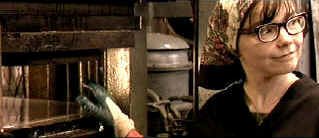

| Dancer in the
Dark/B,B+ |
| New
line/2000/141/ANA 2.35 |
Dancer in the Dark elicited such conflicting emotions form me.
I found much to admire, yet was frequently dissatisfied with the stylization or even the narrative
path chosen by director Lars Von Trier. Von Trier takes his camera and assaults the audience.
Here: you want to watch my fascinating story unfold, you'll have to watch it on my terms. The
sing-song hand held camera thrusts of Von Trier are ironic when I think back on the polished and
ravishing camera style of the director's 1991 film Zentropa, my first exposure to the
director's work, a film I must say was by far the most satisfying of his I have experienced. Notice
I said experienced rather than seen. Von Trier is a challenging director. Challenging the audience
is his pleasure and does not necessarily add up to your pleasure.
 |
| Selma mans her machine and sings. © New Line |
Just as in his highly praised 1996 Breaking the Waves, Von Trier's
protagonist is a rather simple woman, possessed by a pathetic doggedness. Living in 1960s
Washington, Selma Yeskova is going blind, but her dismal and dim existence is lit by an interior
light. Living a frugal existence, saving every penny she can, the immigrant from Czechoslovakia
lives in a rented trailer on the property of a local policeman. Selma is convinced her
affliction awaits her young son. In the hardware fabrication factory where she works, Selma finds
music in the rhythms of the machinery and escapes into a series of fantasy musical production
numbers, part Busby Berkeley, part Pennies from Heaven. The highly charged breaks from
reality are often exciting, but the choreography and music leaves much to be desired from my point
of view. Excitement was tempered by disappointment at almost every leap, step and chord. Yet, the
power of Dancer in the Dark is inescapable and its the kind of film I would sit down to
watch again to give it a second chance.
Bjork is a wonderful Selma. Fragile and at the same time incredibly strong,
simple, determined, awkward and graceful. She has the power to break your heart. Von Trier has a
sharp sense for casting. Catherine Deneuve, the most elegant Catherine Deneuve, plays a fellow
factory worker and friend and is very effective. David Morse is excellent as Bill, the policeman
cum landlord cum friend Do you remember how frightening Peter Stomare was in Fargo
playing the brute killer? He's incredibly effective in the role of the awkwardly amorous Jeff who
doggedly seeks the affection of Selma.
Happily, Dancer in the Dark gets a polished transfer from New Line. The
consistently sharp images take some of the sting out of Von Trier penchant for a swinging camera.
Color rendition captures Von Trier's intended look very well. Flesh tones are natural. Overall
saturation is very good. Some slight edge enhancement is noticeable in peak transitions. The Dolby
Digital 5:1 Surround sound is very good, creating an interesting ambient feeling for the factory
scenes. There's an eerie sense of air in the prison scenes.
There are two audio commentaries accompanying the film on this special
edition. Most significant are the thoughts of director Lars Von Trier. I find these commentaries so
generous, filmmakers sharing their thoughts and feelings about their work. Von Trier appears to
enjoy talking about his his film very much, making listening to his lilting accent, added to by an
easy laugh, very enjoyable. Von Trier in joined on his commentary by producer Vibeke Windelov, with
some added comments by title sequence Artist Per Kirkeby and Technical Supervisor Peter Hjorth.
Choreographer Vincent Patterson adds his insights on another commentary, while two documentaries
about the making of the film and some additional deleted scenes help make this a fine special
edition.
|
|
|
|

Selections from the Feature Archive
include articles on Akira Kurosawa, Frank
Darabont, Blonde Bimbos, Hollywood Street Gangs, or Vietnam: The
Hollywood Pariah, and many more....
Epic Images of Kurosawa

Click on the image above for an original view of Akira Kurosawa's work

 Have you visited Home Theater
Talk lately? One of the friendliest places on the Net for Home Theater and DVD discussion, you
can get help for installation problems or simply share your opinions with other Vidiots. Have you visited Home Theater
Talk lately? One of the friendliest places on the Net for Home Theater and DVD discussion, you
can get help for installation problems or simply share your opinions with other Vidiots.

Elegant DVD portal with news, reviews, links and information
galore.

The Cinema Laser
A home grown magazine for laserphiles that has been publishing for a number of years and has
embraced DVD in a big way. Lots of helpful information.

The
Films2 website contains Films2.com is a comprehensive film website, providing a searchable shop
of new and archived video and region 2 DVDs to buy. You can check local cinema listings, read the
latest film news, reviews and gossip, and see the latest film trailers.
|